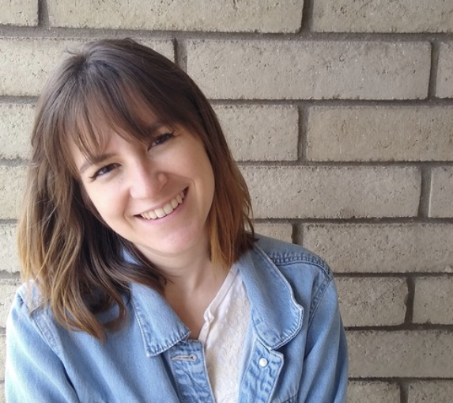
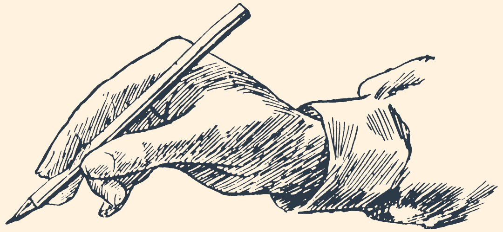

full stack dev
I work with languages-- in many ways! I love to use JavaScript, Python, and GraphQL. I like to think of my code editor as a digital kitchen, or a virtual yoga studio. Once I open it, I enter into a space I associate with a state of flow, and with the satisfaction I get from a completed iteration.
P.S. I also like to blog!
I was curious about why most programming languages index from zero, so I wrote this post!
Full-stack software engineer based out of Phoenix
• JavaScript • Python • GraphQL • SQL • Node • Express • Git • MySQL • Bootstrap • HTML • CSS •
Hi! I’m a software engineer from Phoenix, Arizona. I enjoy knocking out solutions in JavaScript and Python.
I’m eager to learn. I like putting in the work to find creative solutions under constraints. Of course, software development gives me ample opportunity to persevere and to think critically. It’s what I love about this field. I like the challenge of figuring out what causes unexpected behavior in my code.
I’m also a communicator. In my spare time, I’ve volunteered giving educational presentations at women’s events, and I’ve written articles for Darling Magazine, one of the first magazines that took a stance against retouching models. I love using my voice to teach and to build stronger teams.